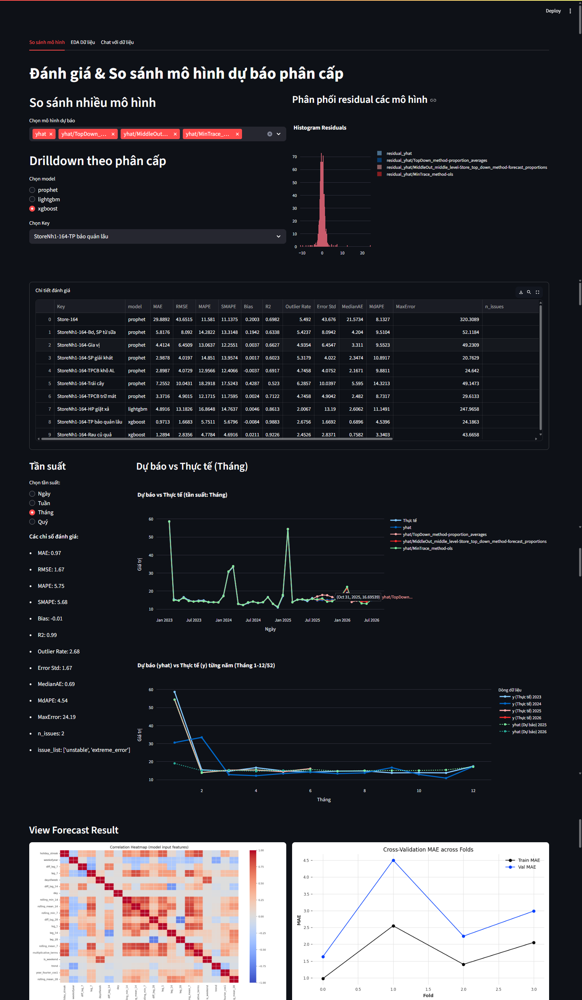
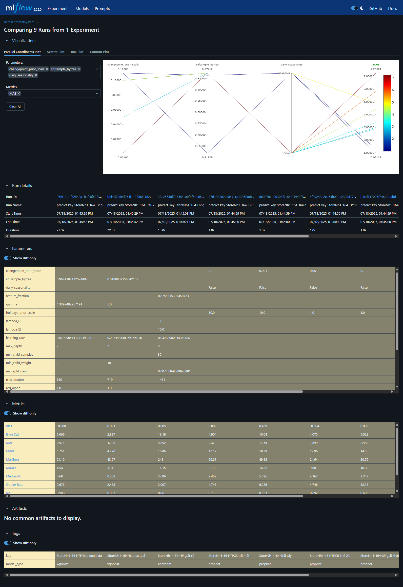

1. Installation & Usage Guide¶
⚙️ Installation¶
1. Prerequisites:
- Python ≥ 3.9
- pip, git
- (Optional): DVC, MLflow, Streamlit, Airflow/Dagster, Docker
2. Clone the repository:
git clone https://github.com/your-org/retail-forecast-system.git
cd retail-forecast-system
3. Create and activate virtual environment:
python -m venv .venv
source .venv/bin/activate
On Windows:
.venv\Scripts\activate
4. Install dependencies:
pip install --upgrade pip
pip install -r requirements.txt
5. (Optional) Install extra tools:
pip install dvc mlflow streamlit
6. Set up .env file for credentials, DB, API keys
cp .env-example .env
🛠Usage¶
1️⃣ DVC Pipeline¶
Run the full pipeline (from raw data to output, all stages auto-tracked):
dvc repro
- Runs every stage in
dvc.yaml. - Outputs, models, metrics, and plots are versioned and reproducible.
Run a specific stage:
dvc repro feature-engineering
dvc repro train-xgboost
Visualize pipeline DAG:
dvc dag
2️⃣ Dagster Pipeline¶
Run with Dagster (for orchestration, monitoring, and visualization):
dagster dev
- Access Dagster UI at http://localhost:3000
- Trigger jobs/assets , monitor status, debug runs.
Example CLI:
dagster job execute --job-name train_xgboost
dagster asset materialize --select feature_engineering
Requires code mapping between pipeline stages and Dagster assets/jobs.
3️⃣ Python CLI / Typer¶
Manually run each stage (for debugging, dev, or running small parts):
# Load data
python main.py load-data load-data --end-date 250630
# Preprocess: transform, cluster, filter
python main.py preprocess transform --input-file sales.csv --holiday-file holidays.csv --output-file transformed.csv
python main.py preprocess cluster-model --input-file transformed.csv --output-file data_clustered.csv --visualize
python main.py preprocess filter-data --input-file data_clustered.csv --output-file filtered.csv
# Feature engineering
python main.py feature-engineering feature-engineering --input-file filtered.csv --holiday-file holidays.csv --max-workers 8
# Train models (XGBoost/LightGBM/Prophet)
python main.py train batch-train --input-file train.csv --holiday-file holidays.csv --model-type xgboost --max-workers 8
python main.py train batch-train --input-file train.csv --holiday-file holidays.csv --model-type lightgbm --max-workers 8
python main.py train batch-train --input-file train.csv --model-type prophet --max-workers 8
# Predict
python main.py predict batch-predict --file-train train.csv --max-workers 8
# Reconcile (hierarchical forecast)
python main.py reconcile reconcile --input-file batch_forecast_results.csv --output-file reconciled_forecast_hierarchical.csv
4️⃣ Serving and Visualization¶
- API serving:
uvicorn api.main:app --reload
Access Swagger UI at http://localhost:8000/docs
- Dashboard (Streamlit):
streamlit run app/app.py

- Experiment tracking (MLflow):
mlflow ui
Open http://localhost:5000 for experiment history 
- Notebook EDA/prototyping:
jupyter notebook
5️⃣ Documentation Site¶
View docs:¶
pip install mkdocs
mkdocs serve
2. Project Directory Structure¶
🚀 Features¶
- Automated, reproducible ML pipeline (data to deployment)
- Advanced feature engineering (time, lag, statistics, business, TSFresh, LLM-augmented)
- AutoML and hyperparameter tuning (Optuna/GridSearch)
- Clustering for model specialization (KMeans, GMM)
- Flexible model selection: Prophet, XGBoost, LightGBM, LLM-RAG
- Multi-step and hierarchical forecasting: recursive, direct, hybrid, reconciliation (Bottom-up, Top-down, Middle-out, OLS, MinTrace)
- Explainability: SHAP, LLM auto-diagnosis, reporting
- MLOps: MLflow (metrics, models), DVC (data versioning), Airflow/Dagster (orchestration), FastAPI (serving), Streamlit (visualization)
- Batch & real-time forecasting
- Designed for extensibility: easily add new models, features, or data sources
📠Project Structure¶
retail-forecast-system/
│
├── airflow/ # Airflow DAGs for orchestrating data pipelines and batch workflows
│ └── dags/
│ └── system_retail_pipeline.py # Main Airflow DAG for retail system pipeline automation
│
├── api/ # FastAPI app – RESTful API endpoints for inference, health check, etc.
│ ├── endpoints.py # API route handlers
│ ├── main.py # API app entrypoint
│ ├── schema.py # Pydantic schemas for request/response validation
│ └── utils.py # API-specific utilities
│
├── app/ # Lightweight app front-end or dashboard (e.g. Streamlit, Gradio, etc.)
│ ├── pages/ # Individual app pages (e.g., EDA, visualization)
│ │ └── EDA.PY # Exploratory Data Analysis dashboard page
│ ├── vectordb/ # Vector DB index files (for embedding, semantic search, etc.)
│ │ └── faiss.index # FAISS index for fast vector search
│ ├── README.md # App-specific README/instructions
│ └── app.py # Main app entrypoint
│
├── config/ # YAML configuration files for parameters, models, paths
│ ├── config.yaml # Global project config (paths, globals)
│ └── models.yaml # Model-specific hyperparameter config
│
├── dagster_pipeline/ # Dagster pipeline definitions (alternative or complement to Airflow)
│ ├── assets.py # Dagster asset definitions
│ ├── dagster.yaml # Dagster config
│ ├── jobs.py # Job orchestration (Dagster)
│ └── schedules.py # Scheduled jobs (Dagster)
│
├── data/ # Data storage (DO NOT track raw here if using DVC!)
│ ├── feature-store/ # Feature store for ML training/inference
│ ├── interim/ # Intermediate, cleaned, or transformed data for experiments
│ ├── output/ # Output from batch predictions, evaluations, etc.
│ ├── processed/ # Final/production-ready datasets
│ ├── raw/ # Immutable raw source data (never edit manually)
│ └── sql/ # SQL scripts for ETL or data exploration
│
├── docs/ # Project documentation (Markdown + site output for mkdocs)
│ ├── docs/ # Main docs in Markdown, organized by topic
│ ├── .gitkeep # Ensures folder in git if empty
│ ├── README.md # Documentation for documentation! (Contributing, etc.)
│ └── mkdocs.yml # mkdocs configuration for static site generator
│
├── mlruns/ # MLflow experiment tracking (auto-created, ignore unless using MLflow)
│
├── models/ # Serialized trained models, artifacts, and checkpoints
│ └── .gitkeep # Keep empty directory tracked by git
│
├── notebooks/ # Jupyter/Colab notebooks (experimentation, prototyping, reports)
│ ├── .gitkeep # Empty dir marker
│ ├── [1]_EDA.ipynb # Exploratory Data Analysis notebook
│ ├── [2]_Report.ipynb # Project summary report notebook
│ └── [3]_Pipeline-model.ipynb # Modeling/ML pipeline notebook
│
├── rag/ # Retrieval-Augmented Generation (RAG) code and configs
│ ├── prompts/ # Prompt templates for LLM-driven RAG workflows
│ │ └── file_analysis.yaml# RAG prompt for file analysis
│ ├── chunking.py # Text chunking utilities for RAG
│ ├── data_loader.py # Data loading utilities for RAG
│ ├── embedding.py # Embedding functions/classes
│ ├── llm.py # LLM interface
│ ├── pipeline.py # End-to-end RAG pipeline definition
│ ├── prompt_engine.py # Prompt engineering logic
│ ├── reranker.py # Result reranking logic
│ ├── retriever.py # Retrieval utilities
│ └── vectordb.py # Vector database wrapper
│
├── reports/ # Generated reports, figures, and output for business/tech
│ ├── figures/ # Visual assets, plots, images for reporting
│ └── .gitkeep # Keep empty directory in git
│
├── src/ # Core source code: ETL, ML, feature engineering, modeling, etc.
│ ├── db/ # Database connection and pipeline modules
│ ├── features/ # Automated/manual feature engineering scripts
│ ├── modeling/ # ML/DL model classes and logic (XGBoost, LSTM, Prophet, etc.)
│ ├── strategies/ # Forecasting strategies: benchmark, multi-step, etc.
│ ├── utils/ # General-purpose utility functions
│ ├── config.py # Centralized configuration loader/manager
│ ├── cross_validator.py # Custom cross-validation logic for time series
│ ├── feature.py # Feature store logic/integration
│ ├── forecast_pipeline.py # End-to-end forecast pipeline logic
│ ├── load_data.py # Data loading and parsing logic
│ ├── plots.py # Visualization utilities for model results
│ ├── predict.py # Inference logic for predictions
│ ├── preprocess.py # Data preprocessing/cleaning logic
│ ├── reconcile.py # Hierarchical reconciliation logic
│ └── train.py # Training orchestration/entrypoint
│
├── .dvcignore # DVC ignore patterns for data version control
├── .env # Environment variables (never commit secrets!)
├── Dockerfile # Docker image definition for reproducible builds/deployment
├── Makefile # Automate project workflows (train, test, build, lint, etc.)
├── README.md # Project overview, usage, and instructions (first file people read)
├── docker-compose.yaml # Multi-container Docker orchestration (dev/test/prod)
├── dvc.lock # DVC pipeline lock file (auto-generated)
├── dvc.yaml # DVC pipeline config for data versioning
├── install_ray.bat # Script to install Ray for distributed processing
├── main.py # Project CLI/main entrypoint (run pipelines, apps, etc.)
├── pyproject.toml # Python project metadata/build config (PEP 518+)
└── requirements.txt # Python package dependencies (always pin versions for reproducibility)